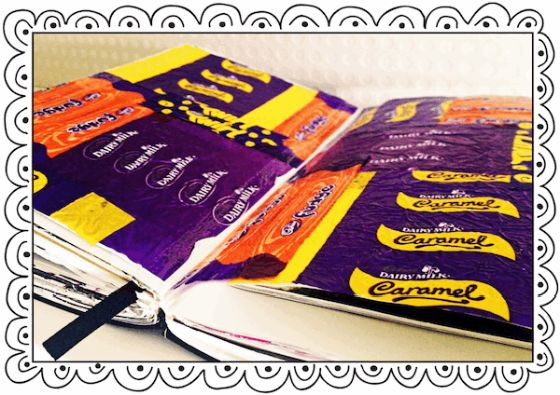
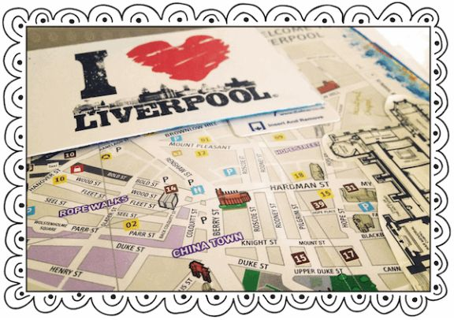

A year of daily journal writing prompts, questions & actions to fill your journal with memories, self-reflection, creativity & direction.
By Rossi Fox
Copyright © 2013 Rossi Fox
V1.9
All rights reserved. No part of this book may be reproduced in any form or by any electronic or mechanical means including information storage and retrieval systems – except in the case of brief quotations in articles or reviews – without the permission in writing from its publisher, Rossi Fox.
All brand names and product names used in this book are trademarks, registered trademarks, or trade names of their respective holders. I am not associated with any product or vendor in this book.
Although the author and publisher have made every effort to ensure that the information in this book was correct at press time, the author and publisher do not assume and hereby disclaim any liability to any party for any loss, damage, or disruption caused by errors or omissions, whether such errors or omissions result from negligence, accident, or any other cause.
This book is not intended as a substitute for the medical advice of physicians or financial professionals. The reader should regularly consult a physician in matters relating to his/her health and particularly with respect to any symptoms that may require diagnosis or medical attention. The author and publisher are in no way liable for any misuse of the material. Published By Rossi Fox
Dedication
This book is dedicated to my family for putting up with such a daydreamer and to you my fellow or soon to be, never too far away from a pen and notebook, journal writer.
Contents
Inspirational tokens & mementos
Year long photography challenge checklist
Why Worry? An Irish philosophy
“Isn’t it mysterious to begin a new journal… I can run my fingers through the fresh clean pages but I cannot guess what the writing on them will be.”
- Maud Hart Lovelace
Hello and welcome to 365 Journal Writing Ideas, my name is Rossi and it is very nice to meet you. Before we begin, do any of the following ring true for you?
Do you have a desire to create a record of your life, to fill a journal or diary with memories, your inner most feelings, ideas, creativity and ambitions?
Is there a collection of blank journals building up on your bookshelf that you have not touched since buying them because you are scared of ruining them? Instead they sit and wait on your bookshelf unfulfilled like the last Christmas tree left in the store.
Does it feel like the intimidating blank journal page is saying, “Really? You think you are good enough to write on me do you?”
Have you started a journal before but stopped after only a few entries because you found it repetitive and boring writing about what you had for breakfast, again? Or did you find it too intense, demanding and time consuming?
Perhaps you are a writer or blogger who wants to knock the wind out of writers block next time it shows up?
If so, you are in the right place as I wrote this book for you.
Follow the daily journaling prompts & weekly actions in this book and by this time next year you will have a journal filled fit to bursting full of memories, self-reflection, appreciation, ideas, inspiration, creativity, new experiences, achievements, short stories, photographs, goals and direction.
So before we start why not make yourself your favorite drink and put on your comfortable clothes, you know the ones you would dare not wear outside of the house. Let’s unlock the potential of your journal and enjoy the next 365 days of you-time…
Just to let you know in advance the journal prompts & actions in this book are not dated so you can start from prompt No.1 & weekly action No.1 at any point in the year.
You will need:
A journal or notebook.
A pen, which does not bleed through the page.
A camera or camera phone.
A glue stick or tape.
A few envelopes slightly smaller in size than the pages of your journal.
Optional: Paints, colored pencils & pens.
Courage to take on ‘the blank page’.
The Journaling Tips & Tricks.
Here you will find a collection of ideas and hacks to help you get the most out of your journal writing practice. Learn how to beat the blank page to start your journal writing practice, how to make the time to write, how to organize your journal/diary, ideas on how to add some visual interest, a collection of alternative journal prompts, a photography challenge checklist, and more.
The 365 Journal Writing Prompts & Questions.
A yearlong guided self-exploration through daily writing prompts. To help you use your journal/diary as a place to remember where you have been (memoir), appreciate where you are now (gratitude) and decide on where you going (goals). Not only helping you gain clarity, closure and purpose but also resulting in your very own mini memoir or life journal keepsake.
Mixed in amongst the reflective journal writing questions are creative writing prompts, light hearted questions and short story writing idea generator tables to help get your creative writing juices flowing allowing you to have some fun with your journal.
For the short story idea generator tables use a dice to select at random 1 of 6 plot ideas from each of the 3 columns. Then combine them to create the plot line for your short story. If you do not have a dice handy, simply write down 3 numbers each from 1-6 at random without looking at the table of plot ideas first. For example 3 6 5 you would use the 3rd prompt from column A, the 6th prompt from column B and the 5th prompt from column C.
You can use the 365 prompts in sequence completing one a day (more if you wish) to build a full and diverse journal in just 15-30 minutes a day, or as an occasional resource to help you beat writer’s block.
The 52 Weekly Actions.
Feel like you are stuck in a bit of a rut? Looking to boost your self-confidence by expanding your comfort zone? Or do you want some new experiences to write about? Along with your trusty journal, complete one action each week over the 365 days to make the next 52 weeks of your life just that little bit more interesting. At the beginning of each week, check the weekly actions to receive your weekly prompt/mission to be completed over the 7 days.
As part of the weekly actions you will be asked to occasionally complete a photography prompt. Keep your camera or camera phone with you and keep an eye out for any opportunities to take as many interesting photos of the subject as you can. Interpretation of the prompt word is totally up to you. Then report back to your journal with your favourite 1-3 photographs.
You can use the photography prompt list as a source of photography subject ideas at anytime.
The Quotes.
I have collected and ordered by subject over 400 quotes and proverbs to be used as an extra source of inspiration, wisdom and starting points for your journal writing practice. I am a self-confessed quote addict. You too?
Note to the digital journal writers: All of the prompts and actions in this book are applicable to those using a journaling app on a computer, smart phone or. Just keep in mind whenever you are prompted to glue something in to your journal simply take a photograph of it and add to the journal entry. Remember to back up often.
“Look inside yourself and you’ll find a world of things (a world of your own experiences) worth writing about.”
- Bette Freene
This is a completely personal choice, as your journal will need to be a place you are happy to write in, carry and be seen in public with. Ask yourself do you prefer a blank page or do you need lines to keep your words from looking like they have been on a night out? Can the paper handle the type of pen you want to use without bleeding through? Do you prefer a journal to be stitched together like a book or spiral bound?
Do you want your journal to have an image on the cover or do you want it plain? Are you planning on customizing the cover with images you want? Do you want a ribbon to mark your current page? An elastic strap to keep it shut?
Spend some time at a bookstore or stationers and get a feel for as many journals and notebooks as you want. Having worked in a stationary store before, I know it is around the notebooks where people spend the most time (there and the glittery gel pens). Picking one journal up, putting it back, picking it back up, then back down, picking up another and so on. So do not worry about the staff wondering if you are acting suspiciously, they will be used to it.
The most popular journal size we sold was around A5 paper size (148mm x 210mm). I too personally prefer the A5 as they are easier to carry around, they are less intimidating to get started with and look more like the journals from the movies once complete. I have experimented with a lot of different journals over the years and my personal favorite is the Large Moleskine Ruled Notebook because it is lined, has a back pocket and an elastic strap.
If the journal you have chosen does not have a pocket in the back, glue in an envelope of a slightly smaller size to your journal on the inside of the back cover. This way you can collect ‘bits and pieces’ as you go to be added to your journal pages at a later time.
Whichever you choose or if you decide to use one you have already bought. Commit to it. This is now the journal you are going to use for the next 365 journal writing days. You will probably go through more than one over the next year so you can experiment with another style for your next one if you wish.
Just do not stop and start again in another journal because you are not ‘feeling it’. This is it.
Making the time to journal can be difficult, jobs need doing, children need feeding, dogs need walking. Writing in the evening can be a great way to clear the mind but can be interrupted by unplanned nights out, temptation to watch a great TV show or the day could of been so long, the last thing you want to do write when all you want to do is crash out.
So I make the effort to journal first thing in the morning. Well it used to be an effort at first, as I used to hate mornings (really hated mornings) but now I feel like I have cheated myself of something if I don’t do it.
Like with exercise it is too easy to dismiss it as something ‘I don’t have time for’ or ‘I’m too tired’. So I like to think of journal writing like mining for precious stones. Sometimes it is going be easy then at times it will feel difficult and you will face thoughts and emotions you would rather keep buried, but by digging deep and clearing the dirt and clutter you will find your diamonds.
Your shiniest diamonds are going to be moments of clarity, acceptance, closure, creativity, ideas, direction and purpose. They are why we should make the time.
If you to want to journal first thing but find it difficult to wake up when you are still not done with yesterday, this is a technique I created through many trial and errors to make myself more of a morning person.
Use two alarms, one set for the time you actually want to get up at, then the other for 30 minutes before the first. The first alarm to go off will be by your bed and you can turn it off for a guilt free 30-minute lie in. The second alarm to go off will be by your bedroom door, now you are up. Stay up. Even though your bed will be calling you back. Go into the kitchen and make yourself a drink to wake yourself up with. Now for the best part, get back into bed with your journal. The next 45 minutes are yours and yours alone to journal in bed.
Open this book and your journal and go with it. It will get your mind going for the day and I have found for myself the benefit of journaling first thing is that although we are slower physically in the morning (lots of yawning, stubbing toes on the corner of the wall etc) our minds are pretty sharp as the events of the day have not cluttered them up yet. There is probably a scientific study somewhere backing this up.
Once you have finished your daily journal writing you could spend the rest of your Journal O’clock time flicking through your journal, writing out your list of to-dos for the day or reading a chapter of a book.
Example of my routine:
6:00- Alarm by bed for 30 minute lie in.
6:30- Alarm by bedroom door, get up and make coffee.
6:35- Get back into bed for journal writing and reading.
7:15- Get on with the rest of my day.
Now how much better does this sound compared to starting your day by throwing your alarm clock off of the wall because you are convinced the people in charge of time have got things horribly wrong and you should still have another 4 hours of sleep due. Rushing around the house while still getting ready, eating breakfast while putting on your shoes and telling yourself the daily lie of “I’m going to wake up earlier tomorrow”.
Give the Journal O’clock routine at least 7 days to see if it works for you. Of course journaling at night is a great way to get things off your mind and prepare for a restful nights sleep. Try both and see which works, you yourself will know which is best for you.
Keeping your journal by your bed can also be useful for 2 more reasons:
1 For a restless or worry filled night. Open your journal and just get what is on your mind out onto the paper, better to let your journal deal with it than have it going around your head all night long.
2 For moments of night-time genius. How many times have you thought of an amazing idea at night but instead of turning on the light and getting up to make a note you’ve told yourself “I’ll remember it in the morning”. Only to wake up remembering you had an idea, but you have no clue what it was.
This is the biggest hurdle many people face when wanting to begin journal writing. You have made the time but now you have this beautiful piece of craftsmanship sitting in front of you. In your mind you are picturing a fascinating journal filled with thoughts, dreams, images and memories. Yet the fear of ‘ruining it’ prevents you from even starting.
If this is a problem for you, do not worry because I have included an introduction prompt to help you conquer the first blank page.
I too was so intimidated by the blank page in my first journal you would have been forgiven for thinking it had snapping jaws or shouted insults at me every time I opened it. After many months of hesitation, I realised my need for perfection was literally getting me nowhere. So I now repeat the following mantra to myself whenever I need to stop my perfectionist in its tracks:
A DONE SOMETHING IS BETTER THAN A PERFECT NOTHING.
It is based on the saying ‘done is better than perfect’, which for some reason I couldn’t quite buy into, perhaps because part of me believes perfect is better than done. So by adding ‘something is better than nothing’, I can believe in that completely. I write this on the page I feel intimidated by to break the ice and let it know who is in charge. After all, it is a piece of paper.
It is also useful to use in day-to-day life, for example when procrastinating about something you really need to get done, such as filling out a form, making an important phone call, etc.
So if at any point over the next 365 days should you feel intimidated by your perfectionist (disguised as the fear of the blank page) write the mantra down into your journal.
Remember you cannot ruin an empty journal by writing in it. It would be like saying you ruined an empty swimming pool by filling it with water. It is not something rare and precious, after all there could be another million copies of the exact same blank journal in the world. A journal was never meant to be empty, it was created to help you, let it.
A good way to push yourself past the fear of the blank page is to read the prompts in this book as though they are questions being asked of you by a journalist or TV talk show presenter. It turns your journal writing into more of a conversation and also prevents you from using brief one-word answers; after all you wouldn’t give Oprah Winfrey a one-word answer would you? It also helps you write more because it feels like someone is actually listening to your words.
Give your journal a name to address it by or you could pretend you are writing to a friend, a family member, a historical figure, a fictional character, a celebrity or business personality you admire or even to your higher-self or higher being of your choice. Anyone or anything that helps you open up. You could even address your answers to me if it helps, you can read the about me to put a face to the questions.
Another way to ensure you gain the most possible benefit from your practice is to aim to fill an entire page in your journal per prompt. This will prevent you giving short answers and increase the likelihood of the prompt sparking an idea or memory. It also creates a more interesting keepsake and remember you are digging for diamonds.
At the top of every entry write down the prompt question or just the prompt question number so you can refer back over them. On the outside top corner of each page note the date and on the bottom outside corner tag the journal entry with a #hash-tag. For example if the entry is about your parents you could add #Family #Mom #Dad etc. This makes flicking back over your journal easier, rather than having to scan over every page you can just look at the bottom of each page to see what it was you wrote about.
Once you have finished a journal (great feeling) be sure to label the spine with a date. For example if you wrote in the journal from the 1st of February 2013 to the 20th of September 2013 you would write 01/02/13 – 20/09/13. It just helps for future reference and you can build up a nice ordered collection on your bookshelf (is that my borderline OCD talking again?).
Do not worry about your spelling, grammar or punctuation being perfect. Your journal writing is not going to be assessed. Just let loose and let the words run free without the fear of the grammar police pulling you over and ruining your flow.
Even with an amazing hiding space for your journal (if you feel like hiding it), the fear of people finding your journal and reading something about you or them they might not like is enough to make you drop your pen and bin your journal right now. So whichever journal size you decided on, measure one page and note the dimensions somewhere in the back for future reference.
With this information browse through some magazines, catalogues, newspapers and cut out images and pages that catch your eye. Cut them to size and take 5, fold them half and keep them in the back pocket or envelope in your journal. These can be used to cover over any pages where you have vented about someone or written something you would rather no one else ever read. Scribble over your words and simply glue the magazine page/image over the journal page.
So you will feel better for getting things off of your chest, you do not need to worry about anyone seeing it and you have a nice image in your journal.
AnothertechniqueIoccasionallyuseistowritewithnospacesitcanfeelquitestrangewritinglikethisatfirstbutquiteoffputtingforanyovertheshouldernosyreaders.
Use your journal as a space to get creative, messy and experimental. Some suggestions are:
Prepare pages with a bit of paint for some colour before writing on them.
Paint on pages just for the sake of it; enjoy spreading the paint around the page.
Create collages; images you are drawn to, things you want or collections of images of the same color etc.
Fill a page with colorful sweet wrappers.
Fill a page with rubber stamp prints.
Cover a page with an image pulled from a magazine and use it as a background for a journal entry and write on top of it.
Finger painting.
Become an impromptu fashion designer and sketch out some ideas.
Spread paint around a page using an old gift card then using the edge of the gift card write into the paint to reveal the page beneath. Page size quotes look great like this.
Have fun. It adds texture to your journal and gives it a ‘crunch’ when closing it. Note: I personally find acrylic or poster paints work better than watercolours, as watercolour paints can soak through most standard journal paper types.

Hopefully this will never be needed but just in case, on the inside cover of your journal stick in a small envelope with a $10 note inside with a small note saying:
“Please use this money to post my journal back to me at (name and a work address). It would mean the world to me and please keep any change for yourself. Thank you for your act of kindness.”
Seal the envelope and write on or next to it:
“If you have found my journal please open this envelope”.
This may seem unnecessary at the start of your journal-writing journey but once it is filled with memories, ideas and dreams the $10 will seem like nothing compared to having your priceless personal keepsake returned.
When adding photos to a journal entry it can be tempting to add a lot together but you will end up with more of a photo album than a journal. You should be selective (pretend you are an editor of a magazine) and only add one or two to illustrate the entry. If you can’t resist adding more, glue in an envelope onto a page and keep them together that way or make a small collage of images.
Keep a piece of card to scale of a photo size you would like to add to your journal in the back pocket. Then when you know you want to add a photo you can draw the outline and write around it. I use a 4” x 2.5” template because I can fit 8 photos onto an A4 sheet of photo paper. Also drawing around business cards and sticking in Post-It notes can be a good way to make space for a photo you wish to add later.
We tend to leave our photographs trapped inside our digital cameras, phones and computers. So on payday why not buy (or on special occasions ask for) a gift voucher for a photo print shop or for wherever you buy your printer ink and photo paper from.
This way you will always be in a position to release your photos and physically hold, add them to your journal, share and keep them for future generations. Imagine if your parents did not have that amazing box of random family photos. Do you have half as many physical photographs?
Use your journal to record any fleeting memories. Include as much detail as you can recall. You do not need to remember the specifics like the date or time of the memory, just the details of the moment. Imagine they are like the ‘flashbacks’ characters in movies and TV shows have to build their back-stories.
Simply start an entry with I remember when…
Even though a number of the prompts in this book are gratitude based why not boost the feel good benefits of your journal writing practice by writing down 1-3 things you are grateful for after every journal entry. They can be things you have, have experienced or feel grateful for simply existing so you can one day enjoy them. Some areas to pull from are:
> Experiences
> Food & Drink
> Health & Body
> Material Goods & Services
> Money & Success
> Nature
> Passions & Interests
> People
> Places
“Whatever you appreciate and give thanks for will increase in your life.”
- Sanaya Roman
Also do not be afraid to repeat gratitude entries. I used to be so hung up on the idea of having to have completely unique entries, until I realized it is all about what you are feeling. If you are feeling grateful for something again, write it down again. Gratitude is gratitude, simple.
A list of things to keeping adding to your journal:
> Your photographs
> Old family photographs
> Photobooth strips
> Flyers
> Business cards
> Appointment cards
> Recipes
> Magazine articles
> Postage stamps
> Quotes, Prayers or words of wisdom
> Handwritten letters
> Thank you notes
> Postcards (whenever you are somewhere new, post yourself a postcard)
> Letters or emails of good news
> Advice from books
> Images from magazines, catalogues and brochures that catch your eye
> Drawings
> Doodles
> Seat placement name cards
> Name cards from conventions and networking events
> Images of things you want to own or experience
> Greeting cards
> Funny & amusing images
> Invitations
> Travel tickets
> Hotel key cards
> Concert, movie & theatre tickets
> Maps
> Examples of typography you like
> Receipts from restaurants & bars you enjoyed.
In fact anything flat that you find interesting or inspiring. You do not need to know why you find it so interesting, just keep it. You never know one of these little tokens could be the starting inspiration point for something big. Plus they add some texture and visual impact to your journal. If something catches your eye but is not flat or ‘glueable’ take a photograph of it to glue in later or maybe draw it.
If something like a magazine or blog article is too big, you can fold it once over, then again and glue one side to the page. It will then open up full size when you want. Alternatively summarize the key points of the article into your journal. For blog articles note the website URL into your journal, like a really retro (pen & paper) bookmarking tool.

Your photography mission (should you choose to accept it) is to over the next 12 months see how many of the following you can photograph. Stick the photographs into your journal.
> A sunrise
> A sunset
> Horses
> The ocean
> A forest
> A wild open space
> An ice-cream sundae
> Fireworks
> The view from your bed
> A wise looking tree
> A bird in flight
> A jumping cat
> A sleeping dog
> A self-portrait using a photo booth
> A celebrity
> A city skyline
> Colorful flowers
> Street art
> A portrait
> A group portrait
> The view from a window in your home
> A busy dance floor
> The flag of your country blowing in the wind
> A castle, palace or state building
> A breathtaking view
> Dancers
> The contents of your bag laid out
> A baby animal
> A large crowd
> A flower or plant in 3 stages of its life; seed, sprout and in full bloom
> A rollercoaster
> A historical landmark
> Moving water
> A kiss
> A home baked cake.
> A market stall
> A portrait of a stranger
> A Christmas tree
> A cocktail
> A swimming pool
> A spider’s web first thing in the morning
> Clouds
> Someone you love
> A thing you love
> A rainbow
> A snowman
> Rain on the window
> Bokeh
> Something yellow
> Something blue
> Something green
> Something red
> Something pink
> Something orange
> Something black
> Something white
> Something you really want
Here are a few simple but really useful journal prompts to add to the back of your journal as a quick on the go resource:
How are you feeling?
What do you need to do?
What is not sitting well with you?
If only…
I am loving...
Tell me about a few things that happened today/yesterday.
End of week review:
What did you do?
What went well this week?
What did you learn?
What are your goals and intentions for next week?
These prompts can also be used as an alternative to any of the 365 prompts you do not want to use or feel do not apply to you.
The first page, “so white and pure like fresh snow, it would be such a shame to write on it” I hear you say. So we aren’t going to, you can stick an inspiring image onto the first page at a later date but right now we are going behind it’s back, literally.
Flick to the next page and now let us conquer this double blank page spread by writing out the following to set out your intentions for next year of your life. Write them in a simple list format or randomly around the pages. Either way remember, a done something is better than a perfect nothing.
Over the next 365 days I give myself permission to…
play
rest
love
vent
grow
shine
learn
explore
simplify
color outside of the lines
be loved
be strong
be daring
dream big
be grateful
help others
be creative
laugh more
ask for help
be successful
accept myself
try new things
be determined
create my own life
be kinder to myself
repeat myself if I am not heard
repeat myself if I am not heard
keep an open mind
rise above negativity
let go of past hurts & regrets
celebrate my daily achievements
grab new opportunities with both hands
Congratulations! The blank page has been defeated and you have set the tone for the upcoming year. Ready? Great, now onwards to the next 365 days.
“If I don’t write to empty my mind, I go mad.”
- Lord Byron
What does ‘happiness’ mean to you? Would you describe yourself as a naturally happy or an unhappy & worried person? Tell me about a time when you felt really happy and about a time when you made someone else feel happy.
Create a list of resolutions you would like to keep over the next 365 days. Write as many as you can. Now circle the 3 that mean the most to you and for each one make a promise to your journal:
I promise to (blank). I want to do this because achieving this would mean (blank). My reward will be (blank).
I promise to (blank). I want to do this because achieving this would mean (blank). My reward will be (blank).
I promise to (blank). I want to do this because achieving this would mean (blank). My reward will be (blank).
I am fully aware that at times I will break my resolutions but instead of throwing in the towel and quitting, I will quickly get back on track without feeling any sense guilt or failure.
Signed ...............................................
Combine one prompt from each column to create a plotline for a short story.
|
|
A |
B |
C |
| 1. |
On the 11:00 train from London to Paris |
a school teacher |
discovers a shocking secret |
| 2. |
On a cold winters night |
an under appreciated personal assistant |
performs an act of bravery. |
| 3. |
In the jungles of South America |
a passionate university professor |
travels 100 years into the future. |
| 4. |
In an underwater research facility |
a grumpy old man |
accidently travels back to the time of the Dinosaurs. |
| 5. |
On the canals of Venice |
an introverted ballet dancer |
fights for survival as the world has been overrun by zombies. |
| 6. |
On a desert island |
a chef who hates spoons |
must prevent a nuclear disaster. |
Tell me about one of your earliest memories. Write down anything you can remember.
If you had to be someone else for 24 hours, who would you choose and why? What would you do?
Would you rather be less attractive and extremely intelligent or extremely attractive and less intelligent? What do you think the pros and cons of each combination would be?
List as many things that you can see right now that you are grateful for?
What do you need to accept?
Tell me about an adventure you would love to have.
Write about a dream you can remember. Go into as much detail as possible; fill in the gaps with your imagination. Capturing your dreams in a mind-map can also be good source of inspiration for a later date.
Tell me about one of your most memorable experiences with nature.
Make a list of all the things you would do or buy if you won the lottery jackpot.
What are you waiting for?
In no particular order fill a double page spread in your journal with a list of people, things and places that make you happy.
What ‘excess baggage’ are you carrying around? Create a list of all the negative things you would like to drop off at lost property. Such as a regret, a negative self-belief, a grudge or a past event etc. Tell me how releasing them would make you feel?
If you could click your fingers and be anywhere else right now, where would you be and why? What would you be doing? What would you see, hear, smell and taste?
Write about meeting someone you admire (real or fictional) in an empty elevator, you have 3 minutes to make conversation.
What will you say? What do you want the outcome of the conversation to be? You could even write out the conversation in a script format.
At home find a keepsake box or rummage through a ‘junk’ draw and find something that has a sentimental meaning to you, write about it. What or who does it represent? Alternatively find some old photographs and tell me about one of them.
Who would you want to play you in a movie of your life and why? Who could play the other important roles? What songs would you choose for the soundtrack? Create the play list.
What is some of the best advice you have ever received?
I am grateful for my sense of sight because...
At the top of the page write ‘I am awesome because...’ or ‘I am wonderful because…’
Now write a list dedicated to the awesomeness of you. All of your achievements, successes, talents, skills, quirky interests, qualifications, best experiences & proudest moments. Big and small in no particular order just write them down. Going right back to when you were a child.
I would like to improve my relationship with (blank) because…
What are the main problems? What solutions can you think of? What are some of the good points to the relationship? For example at the worst, this relationship may have taught you about how not to treat other people. What would the benefits of this relationship working better be?
Pick a song, a favorite or completely at random and use a line of lyrics as a title of a short story. Write about whatever the lyrics bring to mind.
Tell me about a ‘perfect moment’ you have experienced. Where were you, who was there, what happened, how did you feel? How does it feel remembering this moment?
Think of 5 different ways you could treat yourself by spending less than $5. Action: Do one of them this week.
If all of the karma you have earned in your life so far came back around to you today, do you think it would it be good or bad? Why?
If good, how would you like to be rewarded? If bad, how do you think you could improve it from today onwards?
I am grateful for my sense of touch because...
What does ‘courage’ mean to you? When have you been courageous for yourself? When have you been courageous for others?
Create a list of all the places in the world you would like to visit. Ignore any money or logistic limitations; just write down your dream list in no particular order.
Combine one prompt from each column to create a plotline for a short story.
|
|
A |
B |
C |
| 1. |
In a secret underground government research facility |
a calm and peaceful yoga instructor |
saves an enemies life. |
| 2. |
On a golden beach |
a firefighter with a fear of heights |
finds an old coin which brings good luck. |
| 3. |
While scuba diving |
a member of Royalty |
finds a compass and a treasure map. |
| 4. |
In New York |
a vegetarian Lion |
falls in love. |
| 5. |
At the Great Pyramids of Egypt |
a socially awkward geek |
is offered a dream job. |
| 6. |
While climbing a mountain |
a blind man |
receives an important phone call. |
Tell me about your earliest memories of school. Can you remember your teachers name and appearance? What were they like? What were your friend’s names? What things were important to you then? What did you enjoy?
What would the name of your autobiography be and why? Title each chapter with a brief description.
If you could relive one memory of your life over again, which would you choose and why?
I am grateful for my sense of taste because...
How are you?
Create a list of experiences you want to have enjoyed in your life.
Such as climbed a mountain, attended a party on a yacht, stayed in a 5 star hotel, been an extra in a movie, met your idol, volunteered at a wildlife sanctuary etc.
Ignore any money or logistic limitations; just write down your dream list in no particular order.
Walk around a bookstore or library and open a random book and select a page. Write down the first sentence of the second paragraph. Now write about whatever came to mind when you read the sentence. If you cannot make it to a bookstore or library use a book from your own bookshelf or eBook collection.
Tell me about one of the best gifts you have ever received.
In your journal write a letter to yourself at 13 years old. What advice would you give?
If you could go back in time and change one thing, would you take the opportunity? Why?
I am grateful for my sense of smell because...
In your journal write a letter (you will never send) to someone you have unresolved issues with. Who you are upset with, feel anger towards or to someone who has left you feeling ‘off centre’ after something they have said or done.
You can even write the letter to yourself about a regret you are holding onto.
Explain how you are feeling. Get it all out.
If you are ready, at the end of the letter I encourage you to try and write I forgive you, I’m sorry, thank you, I love you. It is not for their benefit but for your own.
This is from the Hawaiian practice of forgiveness known as Ho’oponopono. Created to help release you from holding onto negative emotions about a situation. Therefore allowing you to move forward.
Create a list of all the achievements you want to have accomplished in your life.
Such as the ability to speak another language, wrote a book, mastered a martial art, started your own business, raised a happy family, be a talented cupcake baker, earned a degree etc.
Ignore any money or logistic limitations; just write down your dream list in no particular order.
Think of a cause you are passionate about, or a disagreement you have had. Now write about it from the other side’s perspective. Why did they or why are they doing what they are doing? What drives them to do what it is you disagree with? From this point of view can you see any areas where both sides could come to a compromise?
Tell me about someone you miss. Either someone who has passed away, moved or you simply drifted apart from. What experiences did you share? How did they make you feel? What did you learn from them?
Write a letter in your journal to them updating them on your life since you last saw them.
In your journal write a letter to yourself 10 years in the future.
What makes you lose track of time?
I am grateful for my sense of hearing because...
Tell me about something you regret. Then after tell me about what letting go of this regret would do for your wellbeing.
Or tell me about a mistake you have made in your life. Big or small. What happened? Was it really that bad? Beneath it tell me at least 3 good things to come out of the situation. Circumstances, experiences, lessons learned or any new opportunities?
Make a list of all the things you want to do, try and experience that you would find scary and challenging at the time, but would feel amazing after having conquered them.
Such as Cage dived with a great white shark, bungee jumped, held a tarantula spider or snake, solo dined in a busy restaurant, sang at a karaoke bar etc.
Ignore any money or logistic limitations; just write down your dream list in no particular order.
Look out of the nearest window and write in vivid detail what you can see starting from left to right. Imagine you are telling someone who is not tall enough to look out of the window, use as much detail as possible.
Tell me about a time you overcame a difficult situation? What did you learn?
What would your superhero power of choice be? What would you do with your amazing super power? What would your super hero or super heroine name be? What would your costume be like?
Or if you wanted to become a super villain what would your name be? What would your abilities and ambitions be? Describe your secret liar where you make all your plans for world domination.
Tell me about a time when you made what had once seemed impossible, possible.
Looking back on yesterday, do you feel like you have lived that day over & over before? If so, how could you mix things up?
What do people say you are good at?
Tell me about something you want to do or try but your little nagging & self-doubting voice tells you not to. Making you hesitate to even take the first step.
What reasons does it come up with? Let it have full control for a few moments; write down all the doubts it brings up. Now put a line through or scribble out each of its objections and stick an image representing your desire over their words. On top of the image write about how good proving that little critical voice wrong will feel.
Today eavesdrop on a conversation for a few moments. Use what they were talking about as a starting point and continue their story in your journal. Change the names if you know the people.
When you were younger what did you want to be when you were older and why?
If you found a magic lamp what 3 wishes would you ask the Genie for? What would each mean to you? No wishing for extra wishes, not my rules, the Genie’s rules.
What cages have your fears built around you? How could you open the door?
Write a letter or an email to a company praising a member of their staff who recently helped you. Draft it out in your journal first. Report back to journal.
What do you worry about the most?
Are your worries realistic or do they always play out far worse in your head than in reality?
“When I look back on all these worries, I remember the story of the old man who said on his deathbed that he had had a lot of trouble in his life, most of which had never happened.”
- Winston Churchill
What would you do if you knew you could not fail?
Combine one prompt from each column to create a plotline for a short story.
|
|
A |
B |
C |
| 1. |
In the early hours of the morning |
an eccentric fashion designer |
is keeping their true identity a secret. |
| 2. |
In London |
a loud & passionate artist |
becomes a genie. |
| 3. |
At the Eiffel Tower in Paris |
a shy student |
becomes a giant. |
| 4. |
At a campsite |
a Princess |
becomes tiny. |
| 5. |
In the woods |
a playboy Prince |
cannot tell a lie. |
| 6. |
In Rome |
a misunderstood Witch |
can only tell lies. |
What were your favorite childhood games? Real or imaginary. What were the rules? Who did you play it with?
What would you do if you were invisible for 24 hours?
Set a timer for 5 minutes, now for the full 5 minutes do not stop writing. Whatever thoughts cross your mind write them down, do not censor yourself or worry about spelling and punctuation. Just clear all of the mental clutter out onto the page. After the 5 minutes relax and reward yourself.
What are some of your favorite feel good songs? Do any of them have special meanings to you? Create a play list.
What would you change about yourself or your life if you could? Why?
Write out your own ideal obituary for when you are really old and have peacefully past away in your sleep. Who do you want to be dearly missed by? What do you want to be remembered for? What do you want your list of achievements to have been? Imagine you could oversee your funeral, what would you want to over hear people saying about you?
Note: This exercise can bring up ambitions and a sense of purpose you were not aware of before. So take hold of it and use to create starting points for your life right now and make a list of the things you would need to do in order to earn this amazing send off and remembrance.
What do you appreciate about your life right now?
Tell me about your first date. Where did you go, what were they like? Or tell me about how you want your first date to go.
In your journal create a double page collage of people you admire. Search for images online or cut them out of magazines. Next to each person write down one word to describe them.
Tell me about some of the most important lessons you have learned from your parents.
Write a letter in your journal (you don’t have to send) thanking someone who gave you great advice or a nudge in the right direction. Tell them how you used their advice.
Excluding people and pets what 5 things would you rescue from a fire? Why is each so important to you?
Who would your ideal partner be? What qualities do you want in them? What would you offer them? What will you enjoy experiencing together?
If you are in a relationship, what are your partners best qualities? What do you offer them? What would you like to experience together?
Think of your 3 favorite actors; now create a brief movie plot for them together. Give each actor’s character a brief history, 3 distinct personality traits, a personal style and a powerful goal.
Tell me about a pet you had growing up or a friend’s pet. What were they? What was their name? What were they like? Energetic, lazy, loving, scary? Stick in a photo if you have one.
How would you spend $1,000,000 in fun and creative ways if it was handed to you right now? No saving it, paying off debts or donating it. You must spend-spend-spend!
Who do you love? How do you show them? Do you show them often enough?
Create a list of some of your favorite animals, places and events in nature.
When do you feel most alive?
In detail tell me what your perfect day from start to end would be like?
Rewrite a movie ending.
Tell me about your time at High School. What are some of your best memories? Who did you spend most of your time with? What were they like? What did you have in common?
What fashion trends and popular crazes swept through your school while you were there? If you had to be defined by one subject in school during your high school years which subject would it of been? What did you want to be when you left high school?